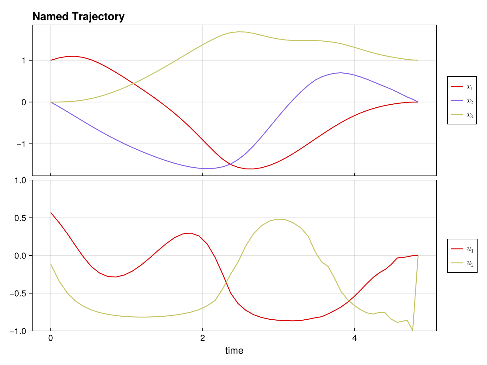

Complete Example: Time-Optimal Bilinear Control
This example demonstrates solving a time-optimal trajectory optimization problem with:
- Multiple control inputs with bounds
- Free time steps (variable Δt)
- Combined objective (control effort + minimum time)
using DirectTrajOpt
using NamedTrajectories
using LinearAlgebra
using CairoMakieProblem Setup
System: 3D oscillator with 2 control inputs
\[\dot{x} = (G_0 + u_1 G_1 + u_2 G_2) x\]
Goal: Drive from [1, 0, 0] to [0, 0, 1] minimizing ∫ ||u||² dt + w·T
Constraints:-1 ≤ u ≤ 1, 0.05 ≤ Δt ≤ 0.3
Define System Dynamics
G_drift = [
0.0 1.0 0.0;
-1.0 0.0 0.0;
0.0 0.0 -0.1
]
G_drives = [
[
1.0 0.0 0.0;
0.0 0.0 0.0;
0.0 0.0 0.0
],
[
0.0 0.0 0.0;
0.0 0.0 1.0;
0.0 1.0 0.0
],
]
G = u -> G_drift + sum(u .* G_drives)#2 (generic function with 1 method)Create Trajectory
N = 50
x_init = [1.0, 0.0, 0.0]
x_goal = [0.0, 0.0, 1.0]
x_guess = hcat([x_init + (x_goal - x_init) * (k/(N-1)) for k = 0:(N-1)]...)
traj = NamedTrajectory(
(x = x_guess, u = 0.1 * randn(2, N), Δt = fill(0.15, N));
timestep = :Δt,
controls = (:u, :Δt),
initial = (x = x_init,),
final = (x = x_goal,),
bounds = (u = 1.0, Δt = (0.05, 0.3)),
)N = 50, (x = 1:3, u = 4:5, → Δt = 6:6)Build and Solve Problem
integrator = BilinearIntegrator(G, :x, :u, traj)
obj = (QuadraticRegularizer(:u, traj, 1.0) + 0.5 * MinimumTimeObjective(traj, 1.0))
prob = DirectTrajOptProblem(traj, obj, integrator)
probDirectTrajOptProblem
Trajectory
Timesteps: 50
Duration: 7.35
Knot dim: 6
Variables: x (3), u (2), Δt (1)
Controls: u, Δt
Objective (2 terms)
1.0 * QuadraticRegularizer on :u (R = [1.0, 1.0], all)
0.5 * MinimumTimeObjective (D = 1.0)
Dynamics (1 integrators)
BilinearIntegrator: :x = exp(Δt G(:u)) :x (dim = 3)
Constraints (4 total: 2 equality, 2 bounds)
EqualityConstraint: "initial value of x"
EqualityConstraint: "final value of x"
BoundsConstraint: "bounds on u"
BoundsConstraint: "bounds on Δt"solve!(prob; max_iter = 50) initializing optimizer...
building evaluator: 1 integrators, 0 nonlinear constraints
dynamics constraints: 147, nonlinear constraints: 0
integrator 1 jacobian structure: 0.579s
jacobian structure: 1764 nonzeros (0.601s)
integrator 1 hessian structure: 0.018s
computing objective hessian structure (CompositeObjective)...
sub-objective 1 (QuadraticRegularizer): 0.345s
sub-objective 2 (MinimumTimeObjective): 0.006s
objective hessian structure: 0.403s
hessian structure: 2814 nonzeros (0.421s)
linear index maps built (0.004s)
evaluator ready (total: 1.162s)
evaluator created (1.695s)
NL constraint bounds extracted (0.025s)
NLP block data built (0.0s)
Ipopt optimizer configured (0.01s)
variables set (0.132s)
applying constraint: initial value of x
applying constraint: final value of x
applying constraint: bounds on u
applying constraint: bounds on Δt
linear constraints added: 4 (0.443s)
optimizer initialization complete (total: 2.304s)
******************************************************************************
This program contains Ipopt, a library for large-scale nonlinear optimization.
Ipopt is released as open source code under the Eclipse Public License (EPL).
For more information visit https://github.com/coin-or/Ipopt
******************************************************************************
This is Ipopt version 3.14.19, running with linear solver MUMPS 5.8.2.
Number of nonzeros in equality constraint Jacobian...: 1746
Number of nonzeros in inequality constraint Jacobian.: 0
Number of nonzeros in Lagrangian Hessian.............: 2748
Total number of variables............................: 294
variables with only lower bounds: 0
variables with lower and upper bounds: 150
variables with only upper bounds: 0
Total number of equality constraints.................: 147
Total number of inequality constraints...............: 0
inequality constraints with only lower bounds: 0
inequality constraints with lower and upper bounds: 0
inequality constraints with only upper bounds: 0
iter objective inf_pr inf_du lg(mu) ||d|| lg(rg) alpha_du alpha_pr ls
0 3.6859217e+00 1.49e-01 1.20e-01 0.0 0.00e+00 - 0.00e+00 0.00e+00 0
1 2.8106300e+00 1.31e-01 5.85e-01 -4.0 1.39e+00 - 1.48e-01 1.16e-01f 1
2 2.3222225e+00 1.14e-01 4.76e+00 -0.8 2.25e+00 - 3.36e-01 1.28e-01h 1
3 2.0927249e+00 9.93e-02 1.10e+01 -0.6 1.71e+00 0.0 5.97e-01 1.28e-01h 1
4 2.1007372e+00 9.90e-02 1.09e+01 -4.0 5.32e+01 - 9.63e-03 4.86e-03h 2
5 2.1366190e+00 9.91e-02 1.13e+01 -0.1 7.82e+00 -0.5 6.94e-02 4.72e-02h 1
6 3.2396523e+00 1.82e-01 1.95e+02 1.6 5.12e+01 - 1.80e-01 1.92e-02f 1
7 2.9170576e+00 1.57e-01 1.67e+02 0.7 1.39e+00 - 2.18e-01 2.10e-01f 1
8 2.9708566e+00 1.44e-01 1.68e+02 0.7 2.20e+01 - 1.95e-01 8.55e-02f 1
9r 2.9708566e+00 1.44e-01 9.60e+02 0.8 0.00e+00 -0.1 0.00e+00 2.98e-07R 6
iter objective inf_pr inf_du lg(mu) ||d|| lg(rg) alpha_du alpha_pr ls
10r 3.2146543e+00 8.06e-02 3.85e+02 1.4 8.39e+00 - 9.32e-01 2.91e-02f 1
11 3.1766673e+00 7.31e-02 2.09e+00 -4.0 2.20e+00 - 1.71e-01 9.69e-02h 1
12 3.2002320e+00 5.58e-02 3.71e+00 -1.0 2.79e+00 - 2.69e-01 1.71e-01h 1
13 3.4758200e+00 4.50e-02 1.36e+01 -0.5 2.40e+00 0.4 3.70e-01 2.00e-01f 1
14 3.6842481e+00 4.10e-02 1.10e+01 -4.0 1.14e+00 0.8 1.32e-01 2.46e-01h 1
15 3.7818474e+00 3.45e-02 2.46e+01 -0.7 8.29e-01 1.2 6.54e-01 1.61e-01f 1
16 3.8720144e+00 2.75e-02 1.36e+01 -1.3 4.04e-01 1.7 6.10e-01 2.19e-01h 1
17 3.9865950e+00 1.81e-02 3.66e+01 -1.3 2.72e-01 2.1 1.00e+00 3.70e-01h 1
18 4.0569797e+00 1.15e-02 5.62e+01 -1.3 1.69e-01 2.5 1.00e+00 3.73e-01h 1
19 4.1089692e+00 6.25e-03 2.69e+01 -1.0 1.02e-01 2.0 1.00e+00 4.56e-01f 1
iter objective inf_pr inf_du lg(mu) ||d|| lg(rg) alpha_du alpha_pr ls
20 4.1676432e+00 5.15e-04 1.61e+01 -1.5 5.68e-02 2.5 1.00e+00 1.00e+00h 1
21 4.1653011e+00 7.83e-06 6.89e-01 -1.7 4.59e-03 2.0 9.99e-01 1.00e+00f 1
22 4.1616174e+00 8.19e-06 1.26e-01 -2.9 3.97e-03 1.5 1.00e+00 1.00e+00h 1
23 4.1519571e+00 2.90e-05 9.86e-02 -3.1 9.40e-03 1.0 9.98e-01 1.00e+00f 1
24 4.1232144e+00 5.67e-04 8.25e-02 -3.5 2.35e-02 0.5 1.00e+00 1.00e+00f 1
25 4.0623421e+00 1.38e-03 8.52e-02 -3.1 7.31e-02 0.1 1.00e+00 1.00e+00f 1
26 3.9628421e+00 4.92e-03 6.30e-02 -2.9 1.57e-01 -0.4 1.00e+00 8.83e-01h 1
27 3.9204217e+00 1.24e-01 1.48e-01 -2.3 7.14e-01 -0.9 6.82e-01 9.02e-01f 1
28 3.8918460e+00 1.07e-01 1.34e-01 -2.1 1.17e+00 -1.4 4.37e-01 2.05e-01f 1
29 3.7698650e+00 7.44e-03 4.15e-02 -2.4 1.54e-01 -0.9 9.00e-01 1.00e+00h 1
iter objective inf_pr inf_du lg(mu) ||d|| lg(rg) alpha_du alpha_pr ls
30 3.5918657e+00 8.27e-03 1.18e-02 -2.9 2.93e-01 -1.4 9.49e-01 1.00e+00h 1
31 3.5165660e+00 1.67e-02 1.98e-02 -2.9 7.70e-01 -1.9 8.91e-01 5.08e-01h 1
32 3.4418804e+00 8.69e-03 1.20e-02 -3.0 2.81e-01 -1.5 1.00e+00 8.98e-01h 1
33 3.3783705e+00 3.45e-03 1.21e-02 -3.6 1.36e-01 -1.0 9.88e-01 1.00e+00h 1
34 3.5555844e+00 4.37e-02 1.61e-01 -1.9 6.14e+00 -1.5 2.38e-02 7.37e-02f 1
35 3.4514661e+00 6.77e-03 1.73e-02 -3.3 1.72e-01 -1.1 1.00e+00 1.00e+00h 1
36 3.3980273e+00 5.41e-03 2.60e-02 -3.3 2.98e-01 -1.6 1.00e+00 9.71e-01h 1
37 3.3785555e+00 4.09e-03 1.26e-02 -3.3 1.74e-01 -1.1 1.00e+00 1.00e+00f 1
38 3.3529741e+00 2.58e-02 4.42e-02 -2.7 1.82e+00 -1.6 3.41e-01 2.35e-01f 1
39 3.3025278e+00 4.75e-02 8.87e-02 -2.1 2.18e+00 -1.2 3.17e-01 1.94e-01f 1
iter objective inf_pr inf_du lg(mu) ||d|| lg(rg) alpha_du alpha_pr ls
40 3.1942002e+00 3.44e-02 1.85e-01 -2.7 3.94e-01 -0.8 9.94e-01 3.80e-01h 1
41 3.0464536e+00 9.06e-03 8.53e-02 -3.3 1.04e-01 -0.3 9.96e-01 1.00e+00h 1
42 2.8938087e+00 6.24e-03 1.84e-01 -3.7 5.47e-01 -0.8 1.00e+00 3.30e-01f 1
43 2.8082240e+00 4.26e-03 1.35e-01 -4.0 1.70e-01 -0.4 1.00e+00 3.37e-01h 1
44 2.7960971e+00 4.01e-03 1.25e+00 -2.9 4.56e-01 -0.9 1.00e+00 5.92e-02h 1
45 2.7504954e+00 9.14e-02 2.24e+00 -1.9 4.00e+00 -1.3 1.00e+00 1.62e-01f 1
46 2.5986580e+00 6.24e-02 1.75e+00 -2.3 1.69e+00 - 1.91e-01 4.75e-01h 1
47 2.6401202e+00 7.49e-02 4.80e-01 -1.7 2.64e+00 - 7.28e-01 3.15e-01f 1
48 2.6536664e+00 7.01e-02 4.45e-01 -1.9 6.06e+00 - 1.51e-02 6.51e-02f 1
49 2.7511137e+00 3.05e-02 1.13e-01 -1.9 8.33e-01 - 7.83e-01 7.67e-01f 1
iter objective inf_pr inf_du lg(mu) ||d|| lg(rg) alpha_du alpha_pr ls
50 2.5730560e+00 9.24e-03 4.71e-02 -2.4 5.07e-01 - 9.28e-01 8.33e-01h 1
Number of Iterations....: 50
(scaled) (unscaled)
Objective...............: 2.5730560135294192e+00 2.5730560135294192e+00
Dual infeasibility......: 4.7137095286910416e-02 4.7137095286910416e-02
Constraint violation....: 9.2424239056567992e-03 9.2424239056567992e-03
Variable bound violation: 0.0000000000000000e+00 0.0000000000000000e+00
Complementarity.........: 1.1187475318277535e-02 1.1187475318277535e-02
Overall NLP error.......: 4.7137095286910416e-02 4.7137095286910416e-02
Number of objective function evaluations = 60
Number of objective gradient evaluations = 51
Number of equality constraint evaluations = 60
Number of inequality constraint evaluations = 0
Number of equality constraint Jacobian evaluations = 52
Number of inequality constraint Jacobian evaluations = 0
Number of Lagrangian Hessian evaluations = 50
Total seconds in IPOPT = 11.270
EXIT: Maximum Number of Iterations Exceeded.Visualize Solution
plot(prob.trajectory) # See NamedTrajectories.jl documentation for plotting options
Analyze Solution
x_sol = prob.trajectory.x
u_sol = prob.trajectory.u
Δt_sol = prob.trajectory.Δt
println("Solution found!")
println(" Total time: $(sum(Δt_sol)) seconds")
println(" Δt range: [$(minimum(Δt_sol)), $(maximum(Δt_sol))]")
println(" Max |u₁|: $(maximum(abs.(u_sol[1,:])))")
println(" Max |u₂|: $(maximum(abs.(u_sol[2,:])))")
println(" Final error: $(norm(x_sol[:,end] - x_goal))")Solution found!
Total time: 5.010293274563775 seconds
Δt range: [0.07143282422643085, 0.1750000081204623]
Max |u₁|: 0.8661924380684791
Max |u₂|: 0.9957386965182158
Final error: 0.0Key Insights
Free time optimization: Variable Δt allows the optimizer to adjust trajectory speed, with shorter steps where control is needed and longer steps in smooth regions.
Control bounds: With time weight 0.5, controls don't fully saturate. Increase the weight to push toward bang-bang control.
Combined objectives: The + operator makes it easy to balance multiple goals.
Exercises
1. Bang-bang control: Set time weight to 5.0 - do controls saturate the bounds?
2. Fixed time: Remove Δt from controls and compare total time.
3. Add waypoint: Require passing through [0.5, 0, 0.5] at the midpoint:
constraint = NonlinearKnotPointConstraint(
x -> x - [0.5, 0, 0.5], :x, traj;
times=[div(N,2)], equality=true
)
prob = DirectTrajOptProblem(traj, obj, integrator; constraints=[constraint])4. Different goal: Try reaching [0, 1, 0] or [0.5, 0.5, 0.5]
5. Tighter bounds: Use bounds=(u = 0.5, Δt = (0.05, 0.3)) - how does time change?
This page was generated using Literate.jl.